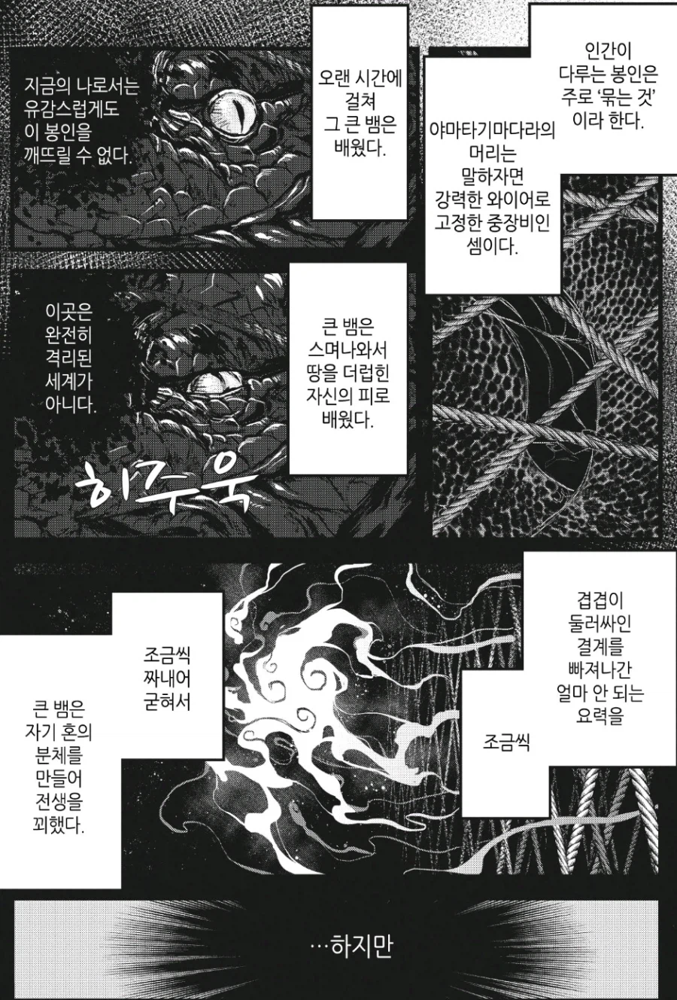
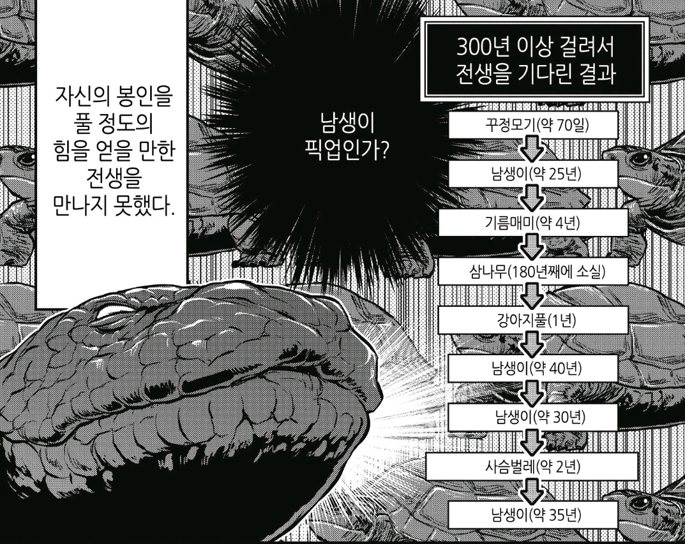

남생이 (쓸모는 없는데 살기는 또 오래삼)


남생이 (쓸모는 없는데 살기는 또 오래삼)
시발ㅋㅋㅋㅋㅋ
레이와의 다라씨
주인공이 큰뱀이랑 융합된 누나인 만화
1화부터 시원하게 젖탱이 까고 나와서 존나 당황함
다라이양...
합치면 보구 세짐
남생이 쿵쿵따
남생이가 지구를 지키고 있어!
이 게임은 천장이 없나봐
남생이 상시픽업!
지구에서 환생 해서 인간으로 환생하기 어렵긴 해..
야이 부처 십새야 반천장 도입하라고
삼나무 180년은 식물이라 불가능인가
년수미달인가
그러게 180년 된 삼나무 정도면 뭔가 신력이건 요력이건 생길거 같긴 한데 ㅋㅋ
너 운없어 접지는 마
접고싶어도 못접는다고ㅋㅋㅋ
그래도 남생이보다 오래가는 나무는 한번밖에 안걸렸네
삼나무도 한건 했네ㅋㅋㅋㅋ
ㅋㅋㅋㅋㅋ. 가챠실패
남생이 풀돌이라고 씨발!!!
삼나무 평생갈뻔햇노 ㅋㅋㅋㅋㅋㅋㅋ
남생이에서 존나 버티면 가메라가 될수있어!
삼나무 180 이면 리셋 다행히 빨리됐네 ㅋㅋ
삼나무는 ㅅㅂㅋㅋㅋㅋㅋ
그냥 바오밥나무로 태어나심이
목재론 쓸모도 없어서 베어지지도 않음
남생이를 한계돌파하여 전무 3성을 찍고 풀각성에 초월에 펫과 인장작업까지 해야한단 말이다
삼나무에서 웃었다 1000~2000년도 산다던데
남생이가 문제가 아니라 삼나무가 존나 큰 문제였는데
식물이랑 벌레도 풀에 들어가있는게 은근 공포네 ㅋㅋㅋ
다른 별에서 안태어난걸 다행으로
삼나무 ㅋㅋㅋㅋ
픽업 확률 개혜자 아니냐고 ㅋㅋㅋㅋ
그저 남생이좋아 청년
남생이 ㅋㅋㅋㅋㅋㅋㅋㅋㅋㅋㅋ
유남생
남생이 중복 ㅋㅋ